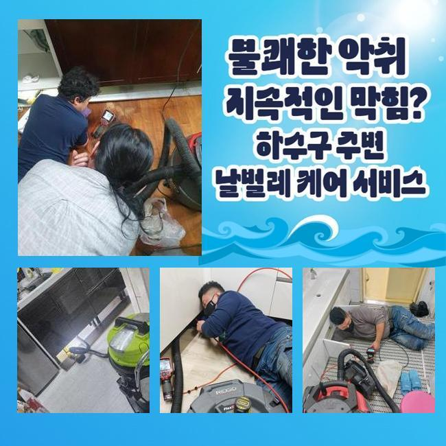
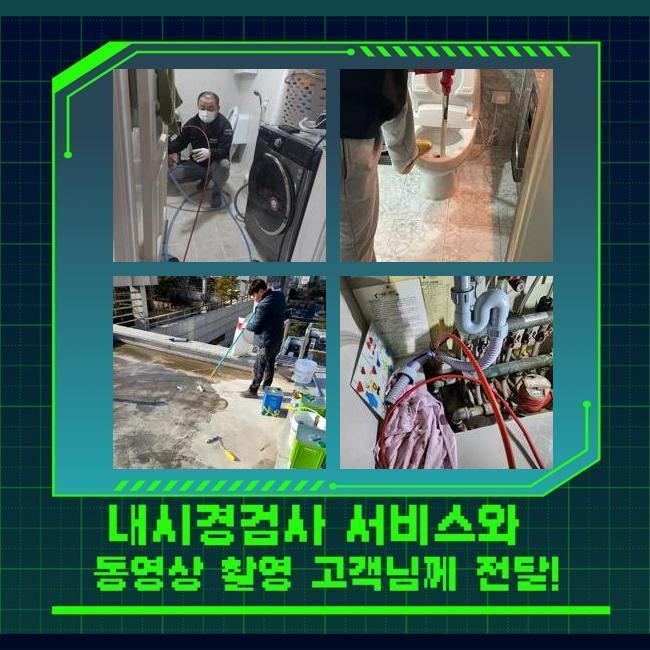
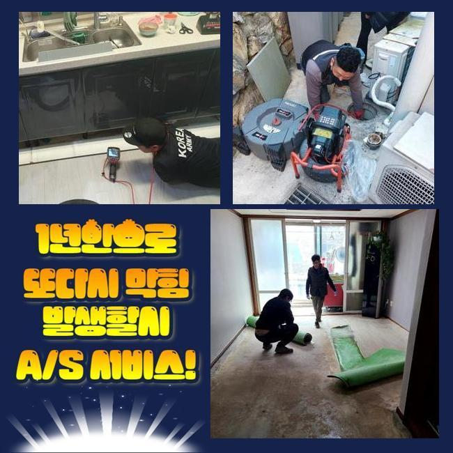
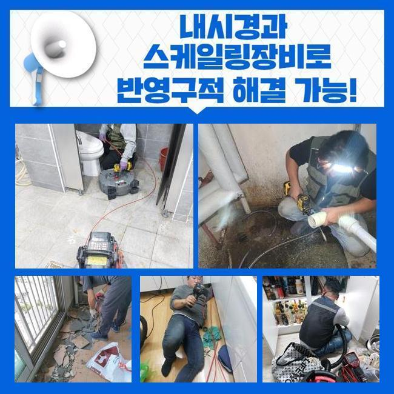
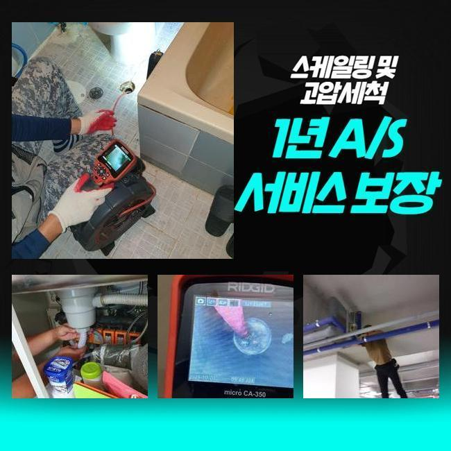
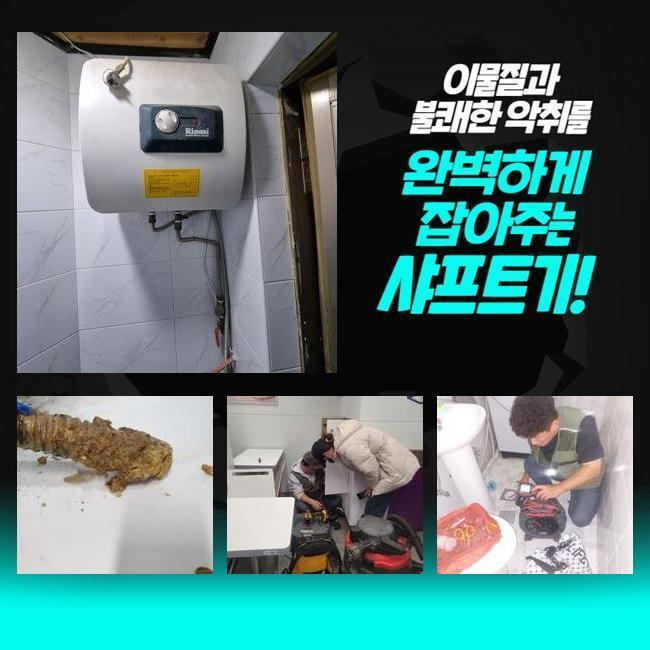
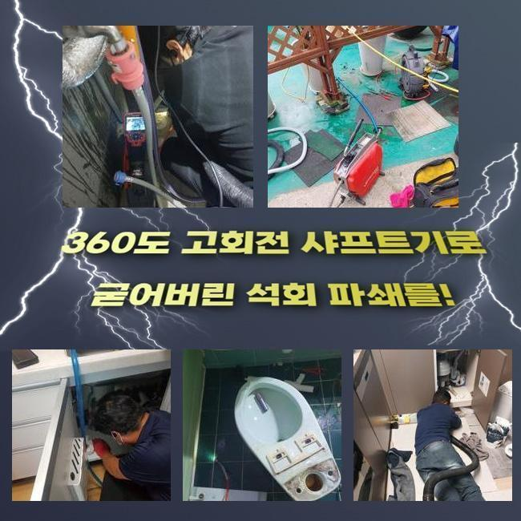

🏠 아산 모종동세탁실뚫음 인주면 오수맨홀청소 해결방법
아산 인주면 하수구막힘 전문 시공 후기

📋 작업 개요
- 위치: 아산 인주면, 인주면, 아산
- 서비스 유형: 하수구막힘, 배관막힘, 맨홀막힘, 역류해결, 뚫는업체, 배관청소, 고압세척, 배관보수
- 작업 일시: 2024. 11. 2. 10:49
- 업체명: 하수구수사대 (010-5615-2118)
🔍 문제 상황
아산 모종동세탁실뚫음 인주면 오수맨홀청소 해결방법
일상적으로 이용하는 공간마다 하수설비가 있기 마련이죠
매일 이용하는 배수구는 사용시의 주의사항과 깨끗한 위생활동이 중요해요
일상생활을 하면서 사용한 물들이 나가는 곳이므로 일반적으로 이용하고 계신다면 일반적으로 문제는 없을거라 예상합니다
올바르지 않은 이용으로 작은 침전물이 유입이 되는 경우 연쇄적인 문제점이 발생합니다
이번에는 하수시스템의 막힘문제로 문의주셔서 빠른 수리를 위해서 출동했습니다
무슨 이유로 상황이 일어나는지 의심이 되는 부위의 점검들을 진행합니다
처음 순서로 수리를 시작하면 하수시스템의 시작점과 마지막 부위를 일단 확인하며 오염된 물을 내보내는 곳을 확정해두고 전체과정에 필요한 순서대로 시공합니다
하수구설비를 모두 파악해본 결과로는 아랫층 상가쪽의 하수설비가 역류하고 있는 상태였어요
확인한 내용을 같이 보면서 말씀을 드리니 긴급히 작업을 진행하길 원하셔서 즉각적으로 작업에 들어갔습니다
설비가 위치해 있는 지하로 내려가면서 문제구간을 수도관 탐지기기로 색출 해냅니다
해당구간을 시공하기 위해서 작업이 예상되는 지점에 있는 차량 및 오토바이 등을 이동시키고 나서 작업을 시작할 수 있었습니다

🔎 원인 분석
💡 전문가 진단: 정밀 진단 장비를 사용하여 슬러지의 고착 여부를 판명하고 타격/세척 작업을 실시했습니다.
배수구 막힘사고는 물이 새는 문제로도 이어지며 작업이 힘든 주자창에서 고가의 차량들이 망가지는 경우도 있으므로 더 주의해야 되겠죠
배수라인에 대하여 알고는 계시겠지만 배수구는 평생 사용할 수 없어요
신경써서 사용을 해도 세월들이 지남에따라 노후화가 원인이 되면서 망가지는 경우가 생겨요
배수라인에서 단순하게 하수만 배출되지 않고서 많은 오염원이 섞여서 내려오므로 시간이 지날수록 배관의 안쪽이 엉망진창이 되어갑니다
사용자의 습관에 따라 평균수명으로 알고있는 기간들 보다 단기간에 고장나는 일들도 많아요
사전에 시공을 진행하고자 막힘문제의 시작점이 된 배수라인에 최대한 작게 타공합니다
보통 천장속에 위치한 구간들은 묻혀있는 배수라인들과 다르게 한쪽에 구멍내고 난 후 고압으로 세척이 가능한 노즐들을 넣고나서 오염물질을 배출시킵니다
오늘같은 천장의 하수라인 막힘사태도 같은 방식으로 수리하기 위하여 타공을 했어요
수많은 자동차가 이용하는 현장이라서 선작업을 진행하여 큰비닐을 깔아두고 주변을 완벽하게 보양작업을 완료하여 이물질들이 튀는 것을 방지합니다
작업 과정 중에 80도에 해당하는 미온수를 활용하여 하수라인 내벽에 붙어있는 단단한 이물질을 배출시킵니다
배수라인에 역류사태가 일어났을때 따뜻한 온수로 세척작업을 진행하는 것은 필수입니다
80도의 온수로 기름기를 녹여내고 강한 힘으로 막힌 이물질등을 출구쪽으로 이동시켜 배출할수 있도록 합니다

🔧 작업 과정
비슷한 문제점으로 상세히 문의를 하고싶으시다면 불편한 사항을 문의 해주세요
고객님의 불편사항을 해결할 방법들을 함께 찾아보면서 처리하겠습니다
해당 현장에서는 어마무시한 노폐물이 흘러나왔어요
이러한 작업으로 종료 되는거면 짧은시간안에 정리 됐겠지만 이어져있는 배관들도 살펴보고나서 조금이라도 이물질이 남아있으면 청소해야합니다
세월이 갈수록 불순물이 안쪽에 뭉치게 되므로 사용시 주의하여 하수 외에는 버리지 않을수 있도록 사용하시기 바랍니다
그렇게 하는 습관들이 배수구가 막혀서 생기는 문제들을 대비하고 이용시에 깨끗한 관리법 만으로도 관련된 문제들이 없을 거예요
지상으로 연결되는 배수관에서 출수작업이 원활한지 테스트합니다
다른 구간은 샤프트장치를 사용해서 슬러지를 제거해냈습니다
여러 입구를 통해 장시간 작업을 진행하니 지상의 가게들에서 나오는 이물질들과 침전물이 녹으면서 막힌 곳 없이 되기 시작합니다
배수구로 거르지도 않고 버린다고 쉽게 배출되는 것이 아니예요
큰건물은 이용객등이 하루종일 몇천번씩 오가므로 신경써서 관리를 하셨어도 작은 건물보다 막히는 현상이 자주 일어나죠
이러한 이유로 상가들이 밀집한 곳은 사용에 주의하고 건강하게 사용하는 것이 중요합니다
단단했던 슬러지를 빼낸후 청소까지 끝내고 이어진 배수관을 확인합니다
문제사항 없이 정상배수인지 확인해보니 깨끗한 물들이 나오는게 최종적으로 체크됐습니다
구멍이 난 배수라인에도 마지막으로 막는작업을 완료합니다
상가들마다 호스를 틀어보고 문제는 없는지 확인했으나 문제없었습니다
확인겸 수전을 막고 많은 물을 부은후에 테스트 해보시라고 말씀 드렸었는데 문제는 없다고 하셨어요
문제상황이 완전하게 마무리 됐어요
마무리를 하면서 근처의 상인분들 중에 혹시나 피해가 발생될까봐 궁금하신 분들이 있으신것 같았어요


✅ 작업 완료
마지막 보수작업들까지 책임을 다하니 너무 걱정하시지 말고 의뢰 해주시기 바랍니다
이용하실수록 피해들이 반복되므로 물을 이용을 하고있는데 불편함이 생긴다면 신속하게 문의 해주세요
이번처럼 천정의 배관 막힘사고가 생기신다면 전문진이 도착하여 문제를 확인하여 신속하게 해결하겠습니다
다양한 현장을 해결한 전문가들에게 상담 받아보시고 처리하셔야 합니다
생각해보시고 연락 주신다면 곧신속하게 전문진이 방문하여 고쳐드리겠습니다




⚠️ 하수구 배관 막힘 예방 및 관리 가이드
- ✅ 머리카락, 비닐, 물티슈 등 물에 분해되지 않는 이물질은 하수구 유입을 절대 금지해 주세요.
- ✅ 하수구 거름망을 씌우고 모여진 이물질은 주기적으로 쓰레기통에 바로 비워주셔야 합니다.
- ✅ 배관 노후가 심할 경우 이물질이 더 쉽게 걸리므로 주기적인 배관 세척(고압세척 등)을 권장합니다.
- ✅ 작업 후 1년 이내 재발 시 하수구수사대에서 무상 A/S 보증 서비스를 제공합니다.
💡 핵심 정리
- 확실한 장비 작업(내시경 점검 및 샤프트 스케일링)으로 원인을 뿌리 뽑습니다.
- 작업 후 1년 이내에 동일한 부위 재발 시 100% 무상 A/S 서비스를 보장합니다.
- 서울 · 경기 · 인천 전 지역에 24시간 언제든 긴급 출동할 수 있도록 항시 대기 중입니다.
❓ 자주 묻는 질문 (FAQ)
🚨 아산 인주면 하수구막힘 문제로 고민이신가요?
정확한 원인 진단과 확실한 시공으로 재발 없는 해결을 약속드립니다.
24시간 긴급 출동 | 서울 · 경기 · 인천 전지역 | 1년 내 재발 시 무상 A/S